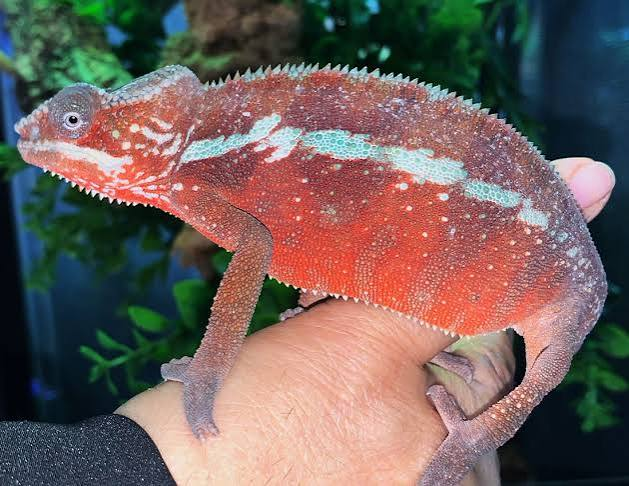

Camaleón Pantera
Es uno de los reptiles más coloridos del mundo. Tiene la capacidad de cambiar de color según su estado de ánimo, temperatura y para comunicarse con otros camaleones.
📏 Tamaño
40–50 cm
🌿 Hábitat
Selvas de Madagascar